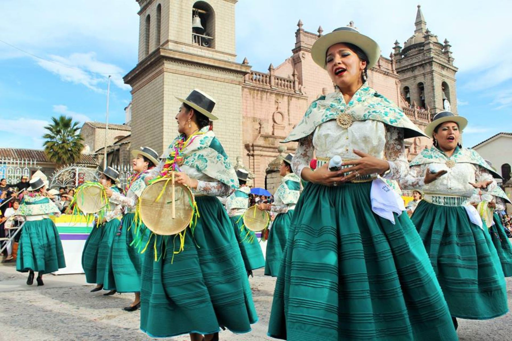
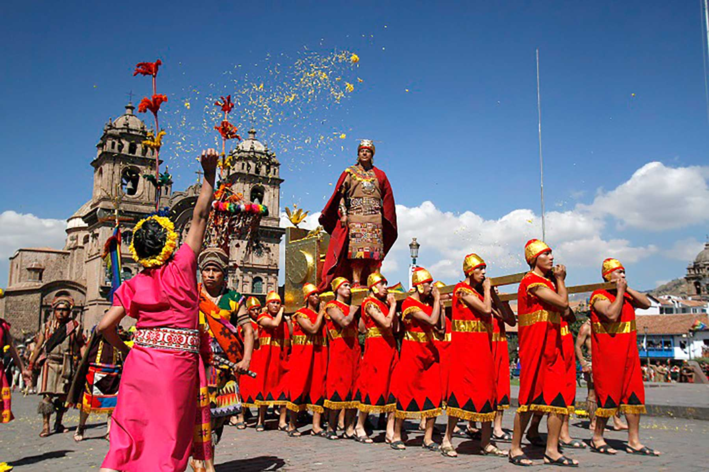
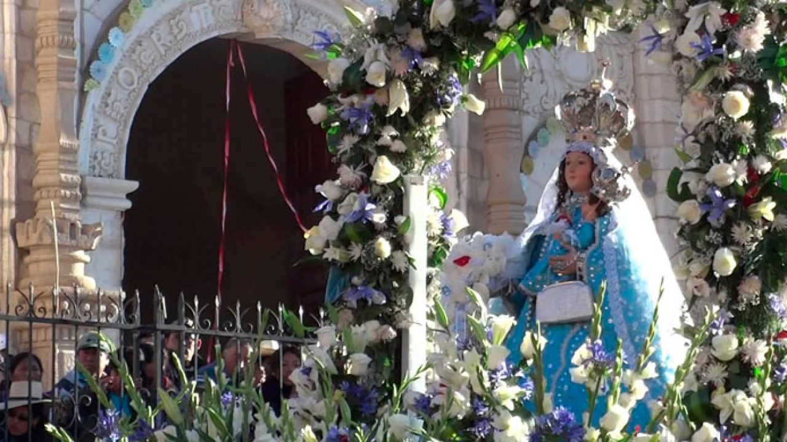
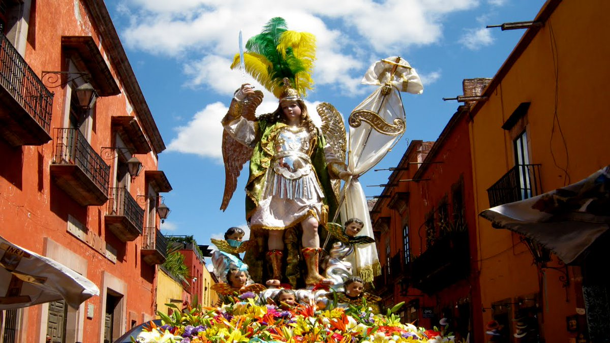

El día festivo, o día feriado, es aquel que no es día laborable y se considera como descanso obligatorio ;es una fecha del calendario que resalta de forma especial, y habitualmente suele ser feriado .Todas las culturas y naciones celebran diferentes eventos durante el año, en fechas específicas de tipo cultural, político o religioso.